구분 | 명칭 | 설명 |
| SILKROAD Logo | SILKROAD Home(Project) 으로 이동 |
| Search | 통합 검색을 위한 키워드 입력창 |
| 메신저, 달력 | 실크로드 사용자간 의사소통을 지원하는 메신저와 일정 공유 및 리마인더 기능을 지원하는 달력 |
| User Information | 현재 접속 중인 사용자 정보 표시 및 개별 사용자 관리 |
| Project/Board/Storage 탭 | 프로젝트 목록, 게시판, 파일 저장소 메뉴 |
SILKROAD 홈은 프로젝트(Project), 게시판(Board), 공유 파일 저장소(Storage) 기능을 제공한다. 프로젝트 탭은 사용자가 참여된 프로젝트 전체 목록과 진행 정보를 표시한다. 게시판 탭은 카테고리별 게시글 생성 및 정보 공유를 지원하고, 파일 저장소 탭에서는 파일을 업로드하고 설정된 권한에 따른 파일 공유 기능을 제공한다.
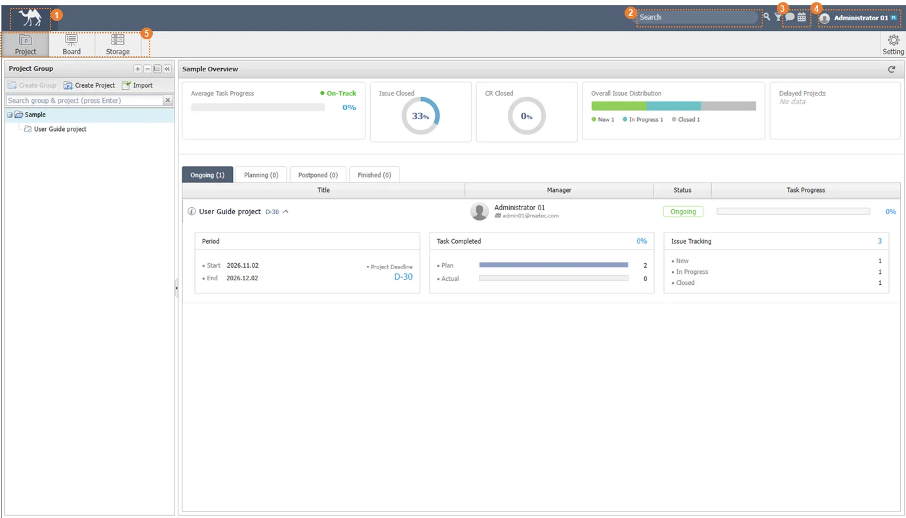 |
구분 | 명칭 | 설명 |
| SILKROAD Logo | SILKROAD Home(Project) 으로 이동 |
| Search | 통합 검색을 위한 키워드 입력창 |
| 메신저, 달력 | 실크로드 사용자간 의사소통을 지원하는 메신저와 일정 공유 및 리마인더 기능을 지원하는 달력 |
| User Information | 현재 접속 중인 사용자 정보 표시 및 개별 사용자 관리 |
| Project/Board/Storage 탭 | 프로젝트 목록, 게시판, 파일 저장소 메뉴 |
실크로드 서버 내 등록된 전체 아이템을 특정 키워드로 검색하는 기능을 제공한다.
① Search 에 검색할 아이템의 내용을 작성한다.
② 검색 아이콘을 클릭한다.
③ 검색한 아이템 내용을 기반으로 검색된 검색 결과를 확인한다.
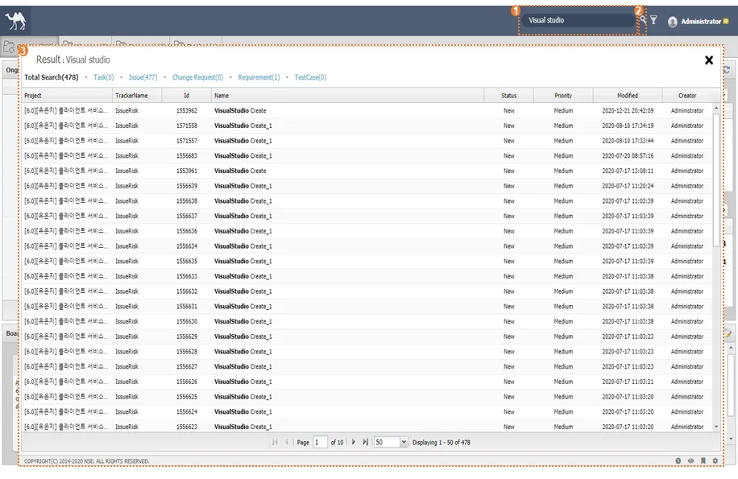 |
① 검색 아이콘 옆 필터 버튼( )을 클릭한다.
② ‘Detail Search’ 창에서 ‘Search Keyword’, ‘Project’, ‘Period’, ‘Creator’를 작성한 후 ‘Search’를 클릭한다.
③ ‘Reset’ 아이콘을 클릭하여 입력된 상세 필터 값 ‘Project’, ‘Period’, ‘Creator’를 초기화 할 수 있다.
④ 검색 결과 화면의 오른쪽 위 X 버튼을 클릭해 검색을 종료한다.
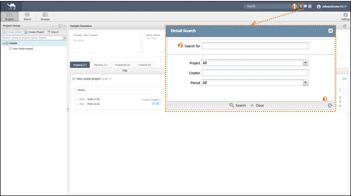 |
‘Search for’ 는 초기화 대상에서 제외된다. |
SILKROAD 에 등록된 계정에 대한 정보 등록, 전자서명 입력, 비밀번호 변경 등 사용자 계정을 직접 관리할 수 있다.
① 사용자 이름 영역을 클릭한다.
② ‘Settings’ 버튼을 클릭하거나, ‘Settings‘ 펼침단추 - ‘Account‘를 클릭한다.
|
③ 사용자 정보 데이터를 작성한다.
④ SILKROAD 내 작업에 대한 메일을 받고자 하는 경우, ‘Receive E-mail’을 체크한다.
⑤ ‘Browse’ 버튼을 클릭하여 사용자 이미지를 추가할 수 있다.
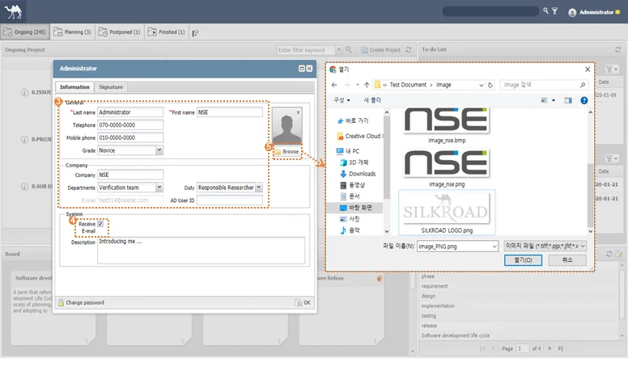 |
회원가입 시 입력한 정보 Last name, First name, E-mail 은 자동으로 입력된다. ‘Information’ 의 Grade, Departments, Duty는 관리자가 등록한 데이터가 표시된다. Admin 매뉴얼을 참고한다. |
Web 계정 사용자의 비밀번호를 변경한다.
① 사용자 정보창 좌측 하단의 ‘Change password’ 버튼을 클릭한다.
② 현재 비밀번호(Current password)와 변경할 비밀번호(New password)를 입력한 뒤 변경할 비밀번호(Confirm Password)를 재입력한다.
③ ‘Submit’ 버튼을 클릭하여 비밀번호를 변경한다.
|
① 사용자 Account 창 상단의 ‘Signature’ 탭을 선택한다.
② 로그인‘Type’, ‘ID’ 정보를 확인한 후 ‘PW’를 입력한다.
③ ‘Login’ 버튼을 클릭한다.
④ 전자 서명 사용 시 인증할 비밀번호를 ‘Input New Signature Password’ 에 입력하고, 입력한 비밀번호 확인을 위해‘Confirm Signature Password’에 재입력한다.
⑤ ‘Confirm’ 버튼을 클릭한다.
⑥ ‘Input Signature’ 에 마우스를 조작하여 전자 서명을 입력하거나, ‘Browse’를 클릭하여 이미지를 삽입한다.
⑦ 잘못 입력한 경우, ‘Clear’ 버튼을 클릭하여 전자서명을 초기화한다.
⑧ ‘Save Signature’ 버튼을 클릭하여 전자서명을 저장한다.
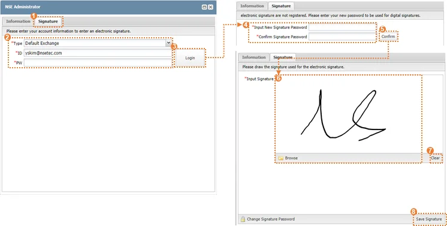 |
전자 서명은 ‘Sign’ 필드가 존재하는 곳에서 사용 가능하며, Custom Field 의 각 모듈에 ‘Sign’ 필드를 추가하여 사용할 수 있다. |
① 사용자 정보창 상단의 ‘Signature’ 탭을 선택한 후 사용자 계정 로그인을 한다.
② ‘Forgot your signature password?’ 버튼을 클릭한다.
③ 사용자 이메일로 임시 비밀번호가 발송된다.
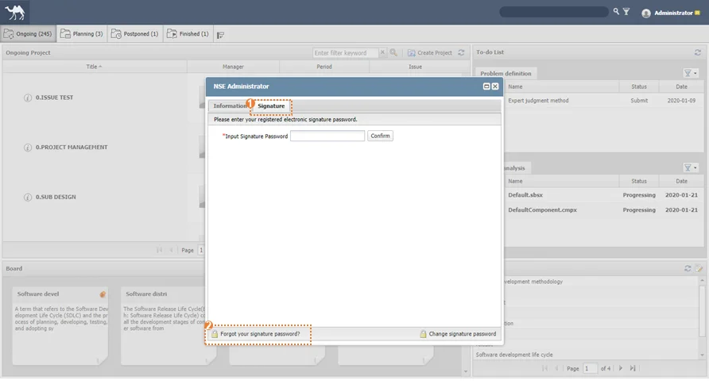 |
① 사용자 정보창 상단의 ‘Signature’ 탭을 선택한 후 사용자 계정 로그인을 한다.
② ‘Change signature password’ 버튼을 클릭한다.
③ 현재 전자서명 비밀번호(Current signature password)와 변경할 전자서명 비밀번호(New signature password)를 입력한 뒤 변경할 전자서명 비밀번호(Confirm Password)를 재입력한다.
④ ‘Submit’ 버튼을 클릭하여 전자서명 비밀번호를 변경한다.
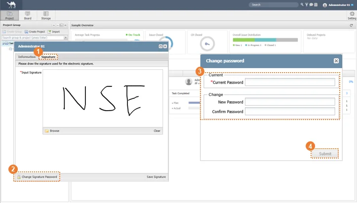 |
SILKROAD Manual을 다운로드할 수 있습니다.
① 사용자 이름을 클릭한 뒤 ‘Settings’ 펼침 단추를 클릭한다.
② ‘Manual’ 버튼을 클릭한다.
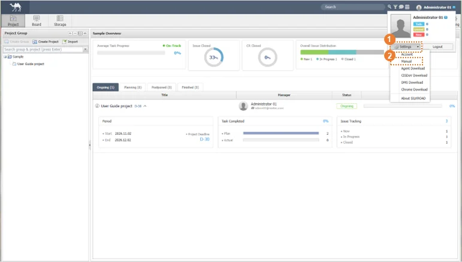 |
① 사용자 이름 영역을 클릭한 뒤 ‘Settings’ 펼침 단추를 클릭한다.
② ‘Agent Download’ 버튼을 클릭한다.
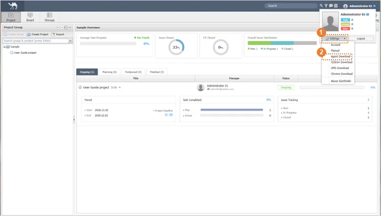 |
Chrome .exe 파일을 다운로드한다.
① 사용자 이름 영역을 클릭한 뒤 ‘Settings’ 펼침 단추를 클릭한다.
② ‘Chrome Download’버튼을 클릭한다.
실크로드는 Chrome 기반 사용을 권장한다. 외부망 접속이 제한된 사용자를 위해 Chrome.exe 파일을 제공한다. |
SILKROAD의 메뉴와 기능을 이용하기 위해서는 프로젝트를 먼저 생성해야 한다.
① ‘Create Project’ 버튼을 클릭한다.
② ‘Name’, ‘Start Date’, ‘End Date’, ‘Status’, ‘Group’, ‘Description’을 입력한다.
③ ‘OK’ 버튼을 클릭하여 프로젝트를 생성한다.
|
④ 또는, 프로젝트 네비게이션 콤보박스의 ‘New Project’를 통해서도 새로운 프로젝트를 생성할 수 있다.
|
① SILKROAD 로고를 클릭하여 실크로드 홈으로 이동한다.
② 정보창 아이콘을 클릭하여 프로젝트 정보창을 실행한다.
|
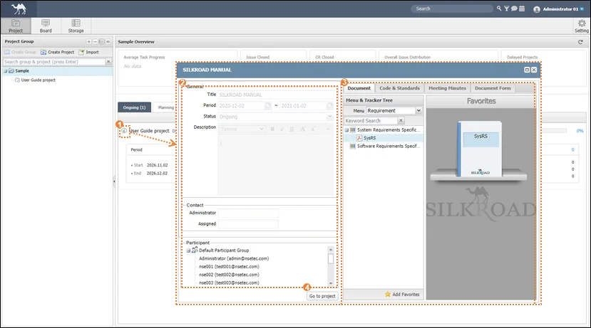 |
구분 | 명칭 | 설명 |
| 정보창 아이콘 | 프로젝트 정보 창 버튼 |
| General | 프로젝트 명, 기간, 참여자 등 기본정보 표시 |
| Silo | 문서, Code&Standard, 회의록 등 프로젝트 관련문서 저장소(Silo 메뉴얼 참고) |
| Go to project | 선택된 프로젝트의 프로젝트 홈화면 이동 |
① 삭제하고자 하는 프로젝트 접속 후 우측 상단의 Project Settings 버튼을 클릭한다.
② 프로젝트 정보창이 생성되면 좌측 하단의 ‘Delete’ 버튼을 클릭한다.
③ ‘Delete’ 창의 ‘OK’ 버튼을 클릭하고 재확인 창에서 ‘OK’버튼을 한번 더 클릭해 프로젝트를 삭제한다.
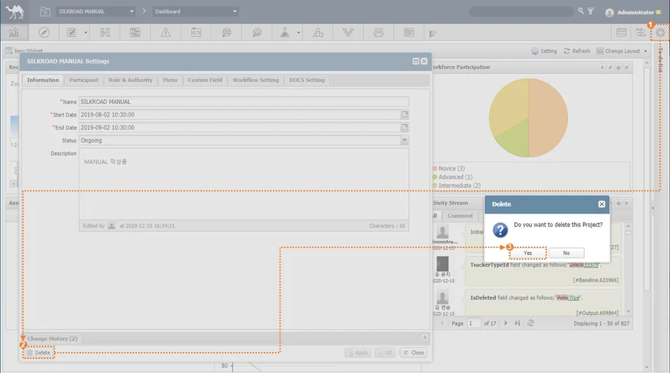 |
프로젝트 삭제는 관리자 권한(Admin, Project Manager)을 가진 사용자만 제한적으로 실행할 수 있다. |
번호 | 메시지 | 설명 | 해결방안 |
|---|---|---|---|
1 | Please enter your search term at least two characters! | 한 글자의 검색어 기재 후 검색 시도 시 | 두 글자 이상의 검색어 기재 후 검색 재시도 |